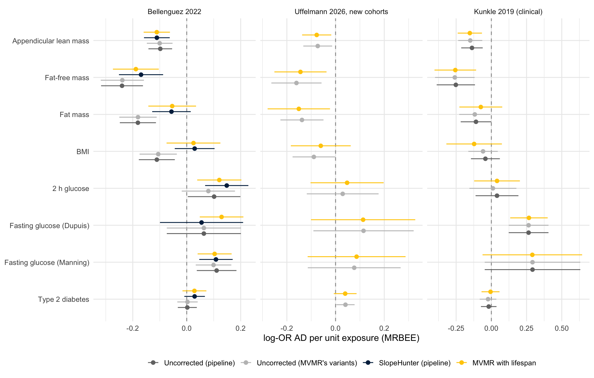

Zhang et al. 2026’s step 2: exposure and lifespan as joint exposures on uncorrected AD
Author
Dave Bridges
Published
November 11, 2026
Why this analysis
Zhang et al. 2026 (AJHG; medRxiv 2026.02.26.26347193) compared corrections for index-event bias in MR. SlopeHunter, our pre-specified correction, had about 50% Type I error in their simulations. Their recommended strategy, when distinct variants drive the selection event, is multivariable MR with the selection trait as a second exposure (their eq. 4). For us the selection event is surviving to the age at which AD is ascertained, so the second exposure is lifespan:
Every AD GWAS is a sample of survivors, so each variant’s AD association carries \(b \times \beta_{life,j}\) on top of its true effect (Dudbridge 2019). \(\theta_{life}\) absorbs that slope: it is an estimate of \(b\), to compare with SlopeHunter’s \(b_{SH} = -0.944\). \(\theta_x\) is the exposure effect with the selection term removed. That is the same correction as the SlopeHunter arm, but here \(b\) comes from strong lifespan instruments rather than a mixture model, and its uncertainty is carried by the regression.
This does not condition on a collider. Nobody is stratified or adjusted on their own survival. The model is a regression across variants of their AD associations on their exposure and lifespan associations, and the lifespan associations come from a GWAS that is not selected on AD. The conditioning on survival already happened when the AD GWAS was done in survivors; the lifespan term models the bias that conditioning left behind. Two real risks remain:
Lifespan variants that affect AD directly. Their AD association is not just \(b \times \beta_{life}\), so they bias \(\theta_{life}\) and, through it, \(\theta_x\) (Zhang et al., Supp. Table S6). Lifespan instruments at established AD loci (APOE, PTK2B–CLU, the MHC/HLA-DQA1 region) are therefore excluded from the primary set; the sensitivity set keeps all but APOE, and every remaining lifespan variant is dropped in turn.
What is removed. Lifespan has no causal effect on the age-specific risk of AD, so the only path through it is mortality: survival selection and death as a competing risk. \(\theta_x\) is therefore the exposure’s effect on AD among people who survive, which is what the SlopeHunter arm also estimates.
Uncertainty from overlapping samples (UK Biobank is in the lifespan GWAS, Bellenguez and several exposures) is handled by MRBEE, which uses the error correlations between the three GWAS. IVW-MRE is reported beside it. Estimates are log-odds of AD per unit of each exposure GWAS’s beta, the scale of the classical rows in results/pipeline/results.csv.
Show the code
library(dplyr)library(tidyr)library(readr)library(ggplot2)library(knitr)out_dir <-"results/mvmr_lifespan"exposures <-c(leanmass_pei ="Appendicular lean mass", ffm_ukb ="Fat-free mass",fatmass_ukb ="Fat mass", bmi_ukb ="BMI", glu2h_chen ="2 h glucose",fg_dupuis ="Fasting glucose (Dupuis)", fg_manning ="Fasting glucose (Manning)",t2d_xue ="Type 2 diabetes")outcomes <-c(ad_bellenguez ="Bellenguez 2022", ad_uffelmann_newc ="Uffelmann 2026, new cohorts",ad_kunkle ="Kunkle 2019 (clinical)")# The fit reads the GWAS from the targets store and takes ~30 min; by default the notebook reads# the CSVs it wrote. Render with -P refit:true to refit.if (isTRUE(params$refit) ||!file.exists(file.path(out_dir, "results.csv"))) {suppressPackageStartupMessages(library(targets))tar_source("pipeline/R")source("R/mvmr_lifespan.R") cfg <- yaml::read_yaml("pipeline/config.yml")run_mvmr_lifespan(names(exposures), names(outcomes), cfg$paths$ld_bfile,resolve_plink2(cfg$paths$plink2), out_dir)}rd <- \(f) read_csv(file.path(out_dir, f), show_col_types =FALSE)iv <-rd("life_instruments.csv")slope <-rd("life_slope.csv")res <-rd("results.csv")cf <-rd("cond_f.csv")loo <-rd("loo.csv")pipe <-read_csv("results/pipeline/results.csv", show_col_types =FALSE, name_repair ="minimal",guess_max =Inf)sh_cfg <- yaml::read_yaml("pipeline/config.yml")$slopehunter$fits$ad_bellenguezsh_fit <-read_csv(sh_cfg$fits_csv, show_col_types =FALSE) |>filter(set == sh_cfg$fit_set)fmt_p <- \(p) ifelse(p <0.001, formatC(p, format ="e", digits =1), sprintf("%.3f", p))lab_x <- \(k) factor(exposures[k], levels =rev(exposures))lab_y <- \(k) factor(outcomes[k], levels = outcomes)
Lifespan instruments
Genome-wide significant parental-lifespan variants (p < 5×10⁻⁸, r² < 0.001 within 10 Mb). Lifespan is a Martingale residual, so positive betas mean shorter life. AD effects are on the same allele. NA means the variant cannot be harmonised. Bellenguez lacks rs429358. rs1556516 (9p21) is a C/G palindrome at allele frequency 0.50, so its strand cannot be inferred and every fit loses it. That leaves 7 usable variants in the primary set.
Show the code
iv |>filter(outcome =="ad_bellenguez") |>arrange(p_l) |>transmute(SNP, chr, pos, `excluded (AD locus)`=coalesce(region, ""),`lifespan beta`=signif(beta_l, 3), `lifespan p`=fmt_p(p_l),`Bellenguez beta`=signif(beta_y, 3), `Bellenguez p`=fmt_p(p_y),`ratio (AD / lifespan)`=signif(beta_y / beta_l, 3)) |>kable(caption ="Lifespan instruments and their Bellenguez AD associations")
Lifespan instruments and their Bellenguez AD associations
SNP
chr
pos
excluded (AD locus)
lifespan beta
lifespan p
Bellenguez beta
Bellenguez p
ratio (AD / lifespan)
rs429358
19
45411941
APOE
-0.0566
1.4e-74
NA
NA
NA
rs1317286
15
78896129
-0.0254
1.2e-26
0.0230
0.007
-0.905
rs55730499
6
161005610
-0.0361
1.7e-18
0.0556
4.7e-04
-1.540
rs1556516
9
22100176
-0.0181
4.7e-16
NA
NA
NA
rs7137828
12
111932800
0.0170
3.4e-14
-0.0155
0.056
-0.912
rs117733303
6
160922870
-0.0552
3.4e-11
0.0407
0.209
-0.737
rs28383322
6
32592796
MHC
0.0182
5.3e-11
-0.0058
0.553
-0.318
rs17514846
15
91416550
-0.0139
7.1e-10
0.0235
0.004
-1.690
rs7844965
8
27442064
PTK2B-CLU
0.0154
7.7e-09
-0.0481
5.1e-07
-3.130
rs61978928
14
75321714
0.0136
2.0e-08
-0.0069
0.428
-0.508
rs602633
1
109821511
-0.0150
2.7e-08
0.0166
0.091
-1.100
The selection slope from lifespan instruments alone
Regressing AD effects on lifespan effects across the lifespan instruments estimates the selection slope directly. It is what \(\theta_{life}\) estimates, without an exposure in the model.
Show the code
sh_row <-tibble(outcome ="ad_bellenguez", set ="SlopeHunter (genome-wide mixture)",method ="SlopeHunter", b = sh_fit$b_SH, se = sh_fit$se_SH, p =NA_real_,n_iv = sh_fit$n_fit, Q_p =NA_real_, egger_intercept_p =NA_real_)bind_rows(slope, sh_row) |>mutate(outcome =lab_y(outcome),set =recode(set, primary ="primary (APOE, CLU, MHC excluded)", all_but_apoe ="all but APOE")) |>arrange(outcome, set) |>transmute(outcome, `instrument set`= set, method, n = n_iv, b =signif(b, 3), se =signif(se, 2),p =fmt_p(p), `heterogeneity p`=signif(Q_p, 2), `Egger intercept p`=signif(egger_intercept_p, 2)) |>kable(caption ="AD on lifespan: the selection slope b")
AD on lifespan: the selection slope b
outcome
instrument set
method
n
b
se
p
heterogeneity p
Egger intercept p
Bellenguez 2022
SlopeHunter (genome-wide mixture)
SlopeHunter
2250
-0.944
0.07
NA
NA
NA
Bellenguez 2022
all but APOE
IVW-MRE
9
-1.140
0.24
2.5e-06
0.037
NA
Bellenguez 2022
all but APOE
Weighted median
9
-0.908
0.24
1.7e-04
0.037
NA
Bellenguez 2022
all but APOE
MR-Egger
9
-0.854
0.75
0.255
0.037
0.70
Bellenguez 2022
primary (APOE, CLU, MHC excluded)
IVW-MRE
7
-1.060
0.19
1.1e-08
0.720
NA
Bellenguez 2022
primary (APOE, CLU, MHC excluded)
Weighted median
7
-0.909
0.25
2.6e-04
0.720
NA
Bellenguez 2022
primary (APOE, CLU, MHC excluded)
MR-Egger
7
-1.100
0.50
0.029
0.720
0.94
Uffelmann 2026, new cohorts
all but APOE
IVW-MRE
8
-0.393
0.29
0.182
0.060
NA
Uffelmann 2026, new cohorts
all but APOE
Weighted median
8
-0.721
0.30
0.017
0.060
NA
Uffelmann 2026, new cohorts
all but APOE
MR-Egger
8
-0.980
1.10
0.354
0.060
0.58
Uffelmann 2026, new cohorts
primary (APOE, CLU, MHC excluded)
IVW-MRE
6
-0.412
0.25
0.103
0.330
NA
Uffelmann 2026, new cohorts
primary (APOE, CLU, MHC excluded)
Weighted median
6
-0.725
0.32
0.023
0.330
NA
Uffelmann 2026, new cohorts
primary (APOE, CLU, MHC excluded)
MR-Egger
6
-1.270
0.76
0.093
0.330
0.30
Kunkle 2019 (clinical)
all but APOE
IVW-MRE
9
-0.600
0.32
0.062
0.370
NA
Kunkle 2019 (clinical)
all but APOE
Weighted median
9
-1.020
0.41
0.012
0.370
NA
Kunkle 2019 (clinical)
all but APOE
MR-Egger
9
-1.680
0.93
0.072
0.370
0.26
Kunkle 2019 (clinical)
primary (APOE, CLU, MHC excluded)
IVW-MRE
7
-0.594
0.34
0.078
0.470
NA
Kunkle 2019 (clinical)
primary (APOE, CLU, MHC excluded)
Weighted median
7
-1.030
0.46
0.024
0.470
NA
Kunkle 2019 (clinical)
primary (APOE, CLU, MHC excluded)
MR-Egger
7
-1.920
0.93
0.039
0.470
0.19
Exposure effects with lifespan in the model
Each exposure’s classical instruments (p < 5×10⁻⁸) are pooled with the lifespan instruments and re-clumped (r² < 0.001 within 10 Mb), with lifespan variants winning LD conflicts. Clumping on the smaller p-value, the usual construction, let hundreds of body-composition instruments displace all but 1–3 lifespan variants. That left a lifespan conditional F of about 2, so the selection term was not identified (the same failure mr_mediation.qmd met and fixed the same way). The fasting-glucose GWAS are HapMap-era and miss most lifespan variants. No proxies are sought, so those fits rest on 3 lifespan variants.
Show the code
res |>filter(set =="primary", !is.na(term)) |>select(exposure, outcome, step, estimator, term, b, se, p, n_snp, n_life_snp) |>pivot_wider(names_from =c(step, term), values_from =c(b, se, p, n_snp, n_life_snp)) |>left_join(cf |>filter(set =="primary") |>select(exposure, outcome, cond_F_exposure, cond_F_lifespan),by =c("exposure", "outcome")) |>arrange(lab_y(outcome), desc(lab_x(exposure)), estimator) |>transmute(outcome = outcomes[outcome], exposure = exposures[exposure], estimator,`uncorrected (same variants)`=sprintf("%.3f (p %s)", b_univariable_exposure, fmt_p(p_univariable_exposure)),`MVMR exposure`=sprintf("%.3f (p %s)", b_MVMR_exposure, fmt_p(p_MVMR_exposure)),`MVMR lifespan (b)`=sprintf("%.2f (SE %.2f)", b_MVMR_lifespan, se_MVMR_lifespan),`variants (lifespan-selected)`=sprintf("%d (%d)", n_snp_MVMR_exposure, n_life_snp_MVMR_exposure),`cond. F exposure`=round(cond_F_exposure, 1), `cond. F lifespan`=round(cond_F_lifespan, 1)) |>kable(caption ="MVMR with lifespan, primary lifespan instrument set (log-OR AD per unit exposure)")
MVMR with lifespan, primary lifespan instrument set (log-OR AD per unit exposure)
outcome
exposure
estimator
uncorrected (same variants)
MVMR exposure
MVMR lifespan (b)
variants (lifespan-selected)
cond. F exposure
cond. F lifespan
Bellenguez 2022
Appendicular lean mass
IVW-MRE
-0.104 (p 2.3e-05)
-0.104 (p 2.6e-05)
-0.52 (SE 0.13)
516 (7)
98.8
2.5
Bellenguez 2022
Appendicular lean mass
MRBEE
-0.100 (p 3.7e-05)
-0.111 (p 8.1e-06)
-0.90 (SE 0.19)
516 (7)
98.8
2.5
Bellenguez 2022
Fat-free mass
IVW-MRE
-0.249 (p 3.4e-10)
-0.217 (p 9.3e-08)
-0.40 (SE 0.13)
492 (7)
44.4
2.6
Bellenguez 2022
Fat-free mass
MRBEE
-0.239 (p 4.9e-09)
-0.188 (p 1.4e-05)
-0.63 (SE 0.22)
492 (7)
44.4
2.6
Bellenguez 2022
Fat mass
IVW-MRE
-0.193 (p 1.2e-08)
-0.110 (p 0.005)
-0.57 (SE 0.14)
385 (7)
12.7
2.8
Bellenguez 2022
Fat mass
MRBEE
-0.181 (p 3.2e-07)
-0.054 (p 0.232)
-0.87 (SE 0.20)
385 (7)
12.7
2.8
Bellenguez 2022
BMI
IVW-MRE
-0.120 (p 4.9e-04)
-0.038 (p 0.354)
-0.53 (SE 0.15)
396 (7)
11.2
2.7
Bellenguez 2022
BMI
MRBEE
-0.106 (p 0.003)
0.025 (p 0.623)
-0.84 (SE 0.22)
396 (7)
11.2
2.7
Bellenguez 2022
2 h glucose
IVW-MRE
0.079 (p 0.114)
0.116 (p 0.005)
-1.09 (SE 0.18)
18 (7)
35.3
24.3
Bellenguez 2022
2 h glucose
MRBEE
0.080 (p 0.112)
0.121 (p 0.004)
-1.14 (SE 0.18)
18 (7)
35.3
24.3
Bellenguez 2022
Fasting glucose (Dupuis)
IVW-MRE
0.062 (p 0.435)
0.055 (p 0.493)
-1.00 (SE 0.25)
14 (3)
52.7
15.5
Bellenguez 2022
Fasting glucose (Dupuis)
MRBEE
0.064 (p 0.365)
0.129 (p 0.002)
-1.14 (SE 0.41)
14 (3)
52.7
15.5
Bellenguez 2022
Fasting glucose (Manning)
IVW-MRE
0.022 (p 0.793)
0.055 (p 0.517)
-0.88 (SE 0.37)
24 (3)
42.7
9.2
Bellenguez 2022
Fasting glucose (Manning)
MRBEE
0.099 (p 0.003)
0.103 (p 0.001)
-1.15 (SE 0.55)
24 (3)
42.7
9.2
Bellenguez 2022
Type 2 diabetes
IVW-MRE
-0.002 (p 0.922)
0.019 (p 0.348)
-0.82 (SE 0.26)
109 (4)
22.5
4.1
Bellenguez 2022
Type 2 diabetes
MRBEE
0.003 (p 0.882)
0.028 (p 0.207)
-1.02 (SE 0.27)
109 (4)
22.5
4.1
Uffelmann 2026, new cohorts
Appendicular lean mass
IVW-MRE
-0.077 (p 0.010)
-0.079 (p 0.008)
-0.20 (SE 0.16)
449 (6)
86.7
2.5
Uffelmann 2026, new cohorts
Appendicular lean mass
MRBEE
-0.073 (p 0.015)
-0.077 (p 0.011)
-0.38 (SE 0.26)
449 (6)
86.7
2.5
Uffelmann 2026, new cohorts
Fat-free mass
IVW-MRE
-0.165 (p 7.0e-04)
-0.156 (p 0.002)
-0.17 (SE 0.15)
423 (6)
46.1
2.7
Uffelmann 2026, new cohorts
Fat-free mass
MRBEE
-0.161 (p 0.002)
-0.144 (p 0.008)
-0.30 (SE 0.26)
423 (6)
46.1
2.7
Uffelmann 2026, new cohorts
Fat mass
IVW-MRE
-0.136 (p 6.5e-04)
-0.145 (p 0.002)
0.07 (SE 0.17)
342 (6)
9.2
2.8
Uffelmann 2026, new cohorts
Fat mass
MRBEE
-0.138 (p 0.002)
-0.151 (p 0.021)
0.10 (SE 0.33)
342 (6)
9.2
2.8
Uffelmann 2026, new cohorts
BMI
IVW-MRE
-0.088 (p 0.021)
-0.071 (p 0.116)
-0.12 (SE 0.16)
349 (6)
8.4
2.7
Uffelmann 2026, new cohorts
BMI
MRBEE
-0.089 (p 0.045)
-0.061 (p 0.333)
-0.19 (SE 0.27)
349 (6)
8.4
2.7
Uffelmann 2026, new cohorts
2 h glucose
IVW-MRE
0.029 (p 0.680)
0.045 (p 0.475)
-0.47 (SE 0.30)
17 (6)
37.3
22.6
Uffelmann 2026, new cohorts
2 h glucose
MRBEE
0.029 (p 0.697)
0.047 (p 0.537)
-0.49 (SE 0.32)
17 (6)
37.3
22.6
Uffelmann 2026, new cohorts
Fasting glucose (Dupuis)
IVW-MRE
0.113 (p 0.241)
0.111 (p 0.251)
-0.47 (SE 0.30)
13 (3)
61.3
16.4
Uffelmann 2026, new cohorts
Fasting glucose (Dupuis)
MRBEE
0.115 (p 0.274)
0.113 (p 0.301)
-0.50 (SE 0.44)
13 (3)
61.3
16.4
Uffelmann 2026, new cohorts
Fasting glucose (Manning)
IVW-MRE
0.076 (p 0.393)
0.085 (p 0.339)
-0.36 (SE 0.40)
23 (3)
44.7
9.5
Uffelmann 2026, new cohorts
Fasting glucose (Manning)
MRBEE
0.077 (p 0.431)
0.086 (p 0.400)
-0.41 (SE 0.61)
23 (3)
44.7
9.5
Uffelmann 2026, new cohorts
Type 2 diabetes
IVW-MRE
0.040 (p 0.067)
0.039 (p 0.092)
0.06 (SE 0.30)
96 (4)
21.7
4.4
Uffelmann 2026, new cohorts
Type 2 diabetes
MRBEE
0.041 (p 0.034)
0.039 (p 0.098)
0.07 (SE 0.52)
96 (4)
21.7
4.4
Kunkle 2019 (clinical)
Appendicular lean mass
IVW-MRE
-0.137 (p 0.001)
-0.138 (p 0.001)
-0.19 (SE 0.22)
478 (7)
99.0
2.5
Kunkle 2019 (clinical)
Appendicular lean mass
MRBEE
-0.150 (p 5.9e-04)
-0.153 (p 5.1e-04)
-0.32 (SE 0.38)
478 (7)
99.0
2.5
Kunkle 2019 (clinical)
Fat-free mass
IVW-MRE
-0.242 (p 3.0e-04)
-0.237 (p 5.0e-04)
-0.00 (SE 0.21)
460 (7)
43.5
2.7
Kunkle 2019 (clinical)
Fat-free mass
MRBEE
-0.259 (p 3.0e-04)
-0.256 (p 6.8e-04)
0.03 (SE 0.41)
460 (7)
43.5
2.7
Kunkle 2019 (clinical)
Fat mass
IVW-MRE
-0.134 (p 0.015)
-0.112 (p 0.074)
-0.13 (SE 0.23)
348 (7)
14.4
2.9
Kunkle 2019 (clinical)
Fat mass
MRBEE
-0.118 (p 0.037)
-0.075 (p 0.335)
-0.29 (SE 0.38)
348 (7)
14.4
2.9
Kunkle 2019 (clinical)
BMI
IVW-MRE
-0.064 (p 0.252)
-0.105 (p 0.110)
0.31 (SE 0.24)
358 (7)
12.2
2.8
Kunkle 2019 (clinical)
BMI
MRBEE
-0.059 (p 0.269)
-0.122 (p 0.224)
0.45 (SE 0.58)
358 (7)
12.2
2.8
Kunkle 2019 (clinical)
2 h glucose
IVW-MRE
0.011 (p 0.883)
0.038 (p 0.606)
-0.63 (SE 0.33)
17 (7)
35.9
25.7
Kunkle 2019 (clinical)
2 h glucose
MRBEE
0.011 (p 0.897)
0.040 (p 0.626)
-0.66 (SE 0.38)
17 (7)
35.9
25.7
Kunkle 2019 (clinical)
Fasting glucose (Dupuis)
IVW-MRE
0.210 (p 0.146)
0.199 (p 0.168)
-0.32 (SE 0.44)
14 (3)
52.7
15.5
Kunkle 2019 (clinical)
Fasting glucose (Dupuis)
MRBEE
0.264 (p 2.4e-04)
0.267 (p 8.5e-05)
0.69 (SE 0.25)
14 (3)
52.7
15.5
Kunkle 2019 (clinical)
Fasting glucose (Manning)
IVW-MRE
0.188 (p 0.386)
0.185 (p 0.386)
-0.23 (SE 0.80)
22 (3)
37.0
10.0
Kunkle 2019 (clinical)
Fasting glucose (Manning)
MRBEE
0.292 (p 0.091)
0.291 (p 0.107)
-0.29 (SE 1.62)
22 (3)
37.0
10.0
Kunkle 2019 (clinical)
Type 2 diabetes
IVW-MRE
-0.023 (p 0.430)
-0.010 (p 0.740)
-0.57 (SE 0.40)
104 (4)
23.7
4.1
Kunkle 2019 (clinical)
Type 2 diabetes
MRBEE
-0.023 (p 0.436)
-0.006 (p 0.858)
-0.76 (SE 0.46)
104 (4)
23.7
4.1
Against the SlopeHunter arm
Bellenguez and Kunkle can be set beside the pipeline’s univariable rows. The pipeline’s SlopeHunter arm (Bellenguez only) now carries the uncertainty in \(b_{SH}\). The uncorrected rows use the pipeline’s classical instruments; the MVMR’s uncorrected comparator uses the exposure-selected variants of its own joint set, which can differ by a variant or two.
Show the code
cmp <-bind_rows( pipe |>filter(outcome %in%names(outcomes), method %in%c("IVW-MRE", "MRBEE"), exposure %in%names(exposures)) |>transmute(exposure, outcome, estimator = method, b, se, p, n_snp,approach =if_else(arm =="raw", "Uncorrected (pipeline)", "SlopeHunter (pipeline)")), res |>filter(set =="primary", term =="exposure") |>transmute(exposure, outcome, estimator, b, se, p, n_snp,approach =if_else(step =="MVMR", "MVMR with lifespan", "Uncorrected (MVMR's variants)"))) |>mutate(approach =factor(approach, levels =c("Uncorrected (pipeline)", "Uncorrected (MVMR's variants)","SlopeHunter (pipeline)", "MVMR with lifespan")),lo = b -1.96* se, hi = b +1.96* se)cmp |>filter(estimator =="MRBEE") |>mutate(cell =sprintf("%.3f [%.3f, %.3f]", b, lo, hi)) |>select(outcome, exposure, approach, cell) |>pivot_wider(names_from = approach, values_from = cell) |>arrange(lab_y(outcome), desc(lab_x(exposure))) |>mutate(outcome = outcomes[outcome], exposure = exposures[exposure]) |>kable(caption ="MRBEE, log-OR AD per unit exposure [95% CI]")
MRBEE, log-OR AD per unit exposure [95% CI]
outcome
exposure
Uncorrected (pipeline)
SlopeHunter (pipeline)
MVMR with lifespan
Uncorrected (MVMR’s variants)
Bellenguez 2022
Appendicular lean mass
-0.098 [-0.142, -0.054]
-0.111 [-0.158, -0.063]
-0.111 [-0.160, -0.062]
-0.100 [-0.148, -0.053]
Bellenguez 2022
Fat-free mass
-0.240 [-0.317, -0.162]
-0.169 [-0.251, -0.087]
-0.188 [-0.273, -0.104]
-0.239 [-0.319, -0.159]
Bellenguez 2022
Fat mass
-0.181 [-0.248, -0.114]
-0.057 [-0.128, 0.015]
-0.054 [-0.142, 0.035]
-0.181 [-0.250, -0.111]
Bellenguez 2022
BMI
-0.111 [-0.178, -0.044]
0.029 [-0.044, 0.103]
0.025 [-0.075, 0.125]
-0.106 [-0.175, -0.037]
Bellenguez 2022
2 h glucose
0.101 [0.004, 0.199]
0.148 [0.068, 0.228]
0.121 [0.039, 0.203]
0.080 [-0.019, 0.179]
Bellenguez 2022
Fasting glucose (Dupuis)
0.064 [-0.074, 0.201]
0.055 [-0.099, 0.209]
0.129 [0.048, 0.210]
0.064 [-0.074, 0.201]
Bellenguez 2022
Fasting glucose (Manning)
0.111 [0.037, 0.184]
0.108 [0.046, 0.170]
0.103 [0.040, 0.166]
0.099 [0.033, 0.165]
Bellenguez 2022
Type 2 diabetes
0.002 [-0.033, 0.037]
0.029 [-0.009, 0.067]
0.028 [-0.016, 0.073]
0.003 [-0.035, 0.041]
Uffelmann 2026, new cohorts
Appendicular lean mass
NA
NA
-0.077 [-0.137, -0.018]
-0.073 [-0.132, -0.014]
Uffelmann 2026, new cohorts
Fat-free mass
NA
NA
-0.144 [-0.251, -0.037]
-0.161 [-0.264, -0.058]
Uffelmann 2026, new cohorts
Fat mass
NA
NA
-0.151 [-0.279, -0.023]
-0.138 [-0.226, -0.050]
Uffelmann 2026, new cohorts
BMI
NA
NA
-0.061 [-0.184, 0.062]
-0.089 [-0.177, -0.002]
Uffelmann 2026, new cohorts
2 h glucose
NA
NA
0.047 [-0.103, 0.197]
0.029 [-0.118, 0.177]
Uffelmann 2026, new cohorts
Fasting glucose (Dupuis)
NA
NA
0.113 [-0.101, 0.327]
0.115 [-0.091, 0.321]
Uffelmann 2026, new cohorts
Fasting glucose (Manning)
NA
NA
0.086 [-0.115, 0.287]
0.077 [-0.114, 0.267]
Uffelmann 2026, new cohorts
Type 2 diabetes
NA
NA
0.039 [-0.007, 0.086]
0.041 [0.003, 0.078]
Kunkle 2019 (clinical)
Appendicular lean mass
-0.138 [-0.214, -0.061]
NA
-0.153 [-0.239, -0.067]
-0.150 [-0.235, -0.064]
Kunkle 2019 (clinical)
Fat-free mass
-0.252 [-0.388, -0.116]
NA
-0.256 [-0.404, -0.108]
-0.259 [-0.400, -0.119]
Kunkle 2019 (clinical)
Fat mass
-0.109 [-0.218, -0.001]
NA
-0.075 [-0.227, 0.077]
-0.118 [-0.228, -0.007]
Kunkle 2019 (clinical)
BMI
-0.042 [-0.145, 0.061]
NA
-0.122 [-0.319, 0.075]
-0.059 [-0.163, 0.046]
Kunkle 2019 (clinical)
2 h glucose
0.040 [-0.112, 0.192]
NA
0.040 [-0.122, 0.203]
0.011 [-0.156, 0.178]
Kunkle 2019 (clinical)
Fasting glucose (Dupuis)
0.264 [0.123, 0.406]
NA
0.267 [0.134, 0.400]
0.264 [0.123, 0.406]
Kunkle 2019 (clinical)
Fasting glucose (Manning)
0.292 [-0.047, 0.632]
NA
0.291 [-0.063, 0.645]
0.292 [-0.047, 0.632]
Kunkle 2019 (clinical)
Type 2 diabetes
-0.019 [-0.074, 0.037]
NA
-0.006 [-0.070, 0.058]
-0.023 [-0.082, 0.036]
Show the code
cols <-c("Uncorrected (pipeline)"="grey45", "Uncorrected (MVMR's variants)"="grey75","SlopeHunter (pipeline)"="#00274c", "MVMR with lifespan"="#ffcb05")cmp |>filter(estimator =="MRBEE") |>mutate(exposure =lab_x(exposure), outcome =lab_y(outcome)) |>ggplot(aes(b, exposure, colour = approach)) +geom_vline(xintercept =0, linetype =2, colour ="grey60") +geom_pointrange(aes(xmin = lo, xmax = hi), position =position_dodge(width =0.6), size =0.35) +facet_wrap(~outcome, scales ="free_x") +scale_colour_manual(values = cols, drop =FALSE) +labs(x ="log-OR AD per unit exposure (MRBEE)", y =NULL, colour =NULL) +theme_minimal(base_size =12) +theme(legend.position ="bottom")

Sensitivity
Keeping the lifespan variants at AD loci
Show the code
res |>filter(step =="MVMR", estimator =="MRBEE", !is.na(term)) |>select(exposure, outcome, set, term, b, se) |>mutate(cell =sprintf("%.3f (%.3f)", b, se)) |>select(-b, -se) |>pivot_wider(names_from =c(term, set), values_from = cell) |>arrange(lab_y(outcome), desc(lab_x(exposure))) |>mutate(outcome = outcomes[outcome], exposure = exposures[exposure]) |>kable(caption ="MRBEE estimate (SE): primary lifespan set vs all lifespan variants but APOE")
MRBEE estimate (SE): primary lifespan set vs all lifespan variants but APOE
exposure
outcome
exposure_primary
lifespan_primary
exposure_all_but_apoe
lifespan_all_but_apoe
Appendicular lean mass
Bellenguez 2022
-0.111 (0.025)
-0.899 (0.194)
-0.116 (0.025)
-0.978 (0.202)
Fat-free mass
Bellenguez 2022
-0.188 (0.043)
-0.626 (0.219)
-0.181 (0.044)
-0.666 (0.223)
Fat mass
Bellenguez 2022
-0.054 (0.045)
-0.875 (0.201)
-0.042 (0.046)
-0.918 (0.214)
BMI
Bellenguez 2022
0.025 (0.051)
-0.839 (0.222)
0.034 (0.052)
-0.910 (0.230)
2 h glucose
Bellenguez 2022
0.121 (0.042)
-1.141 (0.176)
0.120 (0.043)
-1.059 (0.172)
Fasting glucose (Dupuis)
Bellenguez 2022
0.129 (0.041)
-1.145 (0.411)
0.056 (0.087)
-1.057 (0.287)
Fasting glucose (Manning)
Bellenguez 2022
0.103 (0.032)
-1.153 (0.550)
0.142 (0.042)
-1.041 (0.303)
Type 2 diabetes
Bellenguez 2022
0.028 (0.023)
-1.020 (0.270)
0.034 (0.023)
-1.167 (0.347)
Appendicular lean mass
Uffelmann 2026, new cohorts
-0.077 (0.031)
-0.376 (0.259)
-0.074 (0.031)
-0.366 (0.259)
Fat-free mass
Uffelmann 2026, new cohorts
-0.144 (0.055)
-0.304 (0.262)
-0.150 (0.055)
-0.339 (0.256)
Fat mass
Uffelmann 2026, new cohorts
-0.151 (0.065)
0.103 (0.335)
-0.149 (0.064)
0.084 (0.319)
BMI
Uffelmann 2026, new cohorts
-0.061 (0.063)
-0.194 (0.274)
-0.058 (0.062)
-0.198 (0.270)
2 h glucose
Uffelmann 2026, new cohorts
0.047 (0.077)
-0.490 (0.322)
0.048 (0.076)
-0.462 (0.331)
Fasting glucose (Dupuis)
Uffelmann 2026, new cohorts
0.113 (0.109)
-0.503 (0.435)
0.107 (0.108)
-0.712 (0.306)
Fasting glucose (Manning)
Uffelmann 2026, new cohorts
0.086 (0.103)
-0.412 (0.608)
0.093 (0.103)
-0.643 (0.330)
Type 2 diabetes
Uffelmann 2026, new cohorts
0.039 (0.024)
0.072 (0.523)
0.045 (0.023)
-0.108 (0.462)
Appendicular lean mass
Kunkle 2019 (clinical)
-0.153 (0.044)
-0.322 (0.377)
-0.156 (0.044)
-0.362 (0.352)
Fat-free mass
Kunkle 2019 (clinical)
-0.256 (0.075)
0.031 (0.411)
-0.256 (0.074)
0.036 (0.390)
Fat mass
Kunkle 2019 (clinical)
-0.075 (0.078)
-0.288 (0.380)
-0.060 (0.076)
-0.275 (0.359)
BMI
Kunkle 2019 (clinical)
-0.122 (0.101)
0.448 (0.576)
-0.102 (0.091)
0.326 (0.499)
2 h glucose
Kunkle 2019 (clinical)
0.040 (0.083)
-0.657 (0.381)
0.041 (0.083)
-0.658 (0.353)
Fasting glucose (Dupuis)
Kunkle 2019 (clinical)
0.267 (0.068)
0.687 (0.245)
0.193 (0.122)
-0.600 (0.785)
Fasting glucose (Manning)
Kunkle 2019 (clinical)
0.291 (0.180)
-0.288 (1.624)
0.199 (0.208)
-0.530 (0.913)
Type 2 diabetes
Kunkle 2019 (clinical)
-0.006 (0.033)
-0.758 (0.458)
-0.002 (0.032)
-0.885 (0.410)
Leaving out one lifespan variant at a time
Show the code
loo |>filter(term =="exposure") |>group_by(outcome, exposure, estimator) |>summarise(n_dropped =n(), min =min(b), max =max(b),any_ns =any(p >=0.05), any_sig =any(p <0.05), .groups ="drop") |>left_join(res |>filter(set =="primary", step =="MVMR", term =="exposure") |>select(outcome, exposure, estimator, full = b, full_p = p),by =c("outcome", "exposure", "estimator")) |>arrange(lab_y(outcome), desc(lab_x(exposure)), estimator) |>transmute(outcome = outcomes[outcome], exposure = exposures[exposure], estimator,`all variants`=sprintf("%.3f (p %s)", full, fmt_p(full_p)),`range leaving one out`=sprintf("%.3f to %.3f", min, max),`p = 0.05 crossed by any drop`=if_else(full_p <0.05, any_ns, any_sig)) |>kable(caption ="Exposure estimate when each lifespan-selected variant is dropped")
Exposure estimate when each lifespan-selected variant is dropped
Bellenguez, MRBEE: uncorrected, SlopeHunter arm and MVMR with lifespan (b_SH = -0.944)
exposure
Uncorrected (pipeline)
SlopeHunter (pipeline)
MVMR with lifespan
MVMR lifespan slope
Appendicular lean mass
-0.098 (p 1.2e-05)
-0.111 (p 5.5e-06)
-0.111 (p 8.1e-06)
-0.90 (SE 0.19)
Fat-free mass
-0.240 (p 1.4e-09)
-0.169 (p 5.0e-05)
-0.188 (p 1.4e-05)
-0.63 (SE 0.22)
Fat mass
-0.181 (p 1.1e-07)
-0.057 (p 0.121)
-0.054 (p 0.232)
-0.87 (SE 0.20)
BMI
-0.111 (p 0.001)
0.029 (p 0.434)
0.025 (p 0.623)
-0.84 (SE 0.22)
2 h glucose
0.101 (p 0.041)
0.148 (p 2.9e-04)
0.121 (p 0.004)
-1.14 (SE 0.18)
Fasting glucose (Dupuis)
0.064 (p 0.365)
0.055 (p 0.485)
0.129 (p 0.002)
-1.14 (SE 0.41)
Fasting glucose (Manning)
0.111 (p 0.003)
0.108 (p 6.0e-04)
0.103 (p 0.001)
-1.15 (SE 0.55)
Type 2 diabetes
0.002 (p 0.904)
0.029 (p 0.133)
0.028 (p 0.207)
-1.02 (SE 0.27)
Run of 2026-11-11 (primary lifespan set, MRBEE unless stated).
In Bellenguez, step 2 reproduces the SlopeHunter arm. The lifespan coefficient lands between −0.63 and −1.15 across exposures, around b_SH = −0.944. The lifespan instruments alone give −1.06 (IVW) and −0.91 (weighted median). The exposure estimates match the SlopeHunter arm: lean mass −0.111 vs −0.111, fat-free mass −0.188 vs −0.169, fat mass −0.054 vs −0.057, BMI +0.025 vs +0.029, 2 h glucose 0.121 vs 0.148. None of these moves materially when each lifespan variant is dropped, or when the CLU and MHC variants are kept.
IVW-MRE under-corrects for the body-composition exposures. Seven lifespan variants among 400–500 exposure variants give lifespan a mean conditional F of about 2.5. IVW’s lifespan coefficient is diluted toward zero (−0.40 to −0.57), so it removes too little. MRBEE corrects for this and is the estimator to read, the same rule the glucose contrast analysis uses when conditional F < 10. For 2 h glucose (conditional F 24) the two agree.
In Kunkle and the Uffelmann new cohorts, MVMR cannot identify the selection term. The lifespan coefficient’s interval covers both 0 and −0.9, so MVMR there is close to uncorrected. The lifespan instruments alone give negative but imprecise slopes (weighted median −1.03 in Kunkle, −0.73 in Uffelmann). In both cohorts lean mass and fat-free mass are protective and 2 h glucose is null. Fat mass is protective in the Uffelmann new cohorts (−0.151, p = 0.02), and survival selection can neither be removed nor ruled out there. So “the adiposity protection is survival bias” is shown in Bellenguez only; the independent cohorts cannot test it.
The fasting-glucose MRBEE signals are not interpreted. Dupuis (0.129) and Manning (0.103) are positive by MRBEE but null by IVW. Dupuis is unstable when one lifespan variant is dropped (p 0.003–0.55) or the sensitivity set is used (p = 0.52). Both fits rest on only 3 lifespan variants, because these HapMap-era GWAS miss the rest.
Against Zhang et al.’s decision tree, step 2 is now done. In the cohort where the selection slope can be estimated, it gives the same answer as the pre-specified SlopeHunter arm.